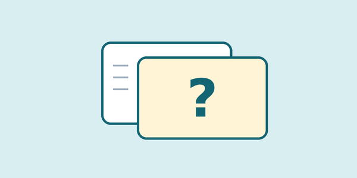
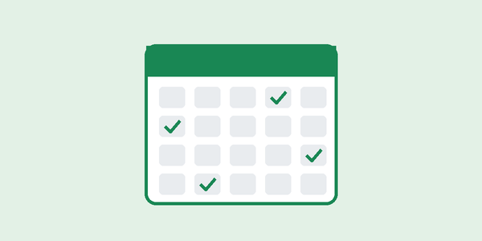

Active recall
Test yourself instead of rereading
Close your notes and write down everything you remember about the topic. Then open your notes, check what you missed, and study only those parts again.
Hello and welcome to LevelUp! This is your go-to hub for mastering student life with useful tips and strategies.
Quote from a fellow student:
I never knew how effective Pomodoro could be until I tried it!
Check out our partner site: Well-being WarriorsTM
One new tip every week
Short enough to read between classes
Tried and tested by students
LevelUp is a student-run hub for practical study advice. Everything you read here has been tried and tested by students who are studying exactly the way you are.
Whether you're managing your time, improving your study skills, or just trying to stay sane during exam season, we're here to support you every step of the way.
The Pomodoro technique breaks study time into focused 25 minute blocks, each followed by a short five minute break. After four blocks, take a longer break of 20 to 30 minutes.


Test yourself instead of rereading
Close your notes and write down everything you remember about the topic. Then open your notes, check what you missed, and study only those parts again.

Short sessions, spread out
Revise a topic the day after class, again a few days later, and again the next week.
Your brain files it overnight
A good night's sleep after studying helps you remember what you learnt. An all-nighter before a test does the opposite.